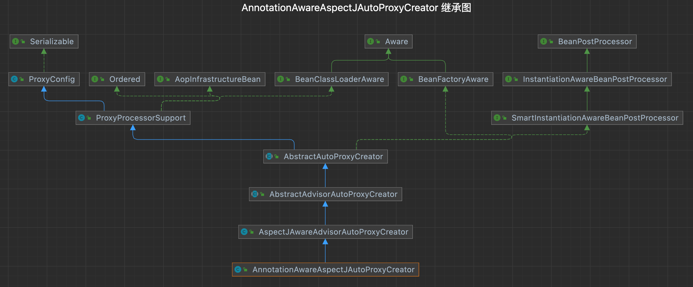

POM
221<dependencies>2 <dependency>3 <groupId>org.springframework</groupId>4 <artifactId>spring-context</artifactId>5 <version>5.0.0.RELEASE</version>6 </dependency>7 <dependency>8 <groupId>org.springframework</groupId>9 <artifactId>spring-aop</artifactId>10 <version>5.0.0.RELEASE</version>11 </dependency>12 <dependency>13 <groupId>org.aspectj</groupId>14 <artifactId>aspectjrt</artifactId>15 <version>1.8.11</version>16 </dependency>17 <dependency>18 <groupId>org.aspectj</groupId>19 <artifactId>aspectjweaver</artifactId>20 <version>1.8.11</version>21 </dependency>22</dependencies>简单的接口和实现类
101
2public interface IOCService {3 public String hollo();4}5
6public class IOCServiceImpl implements IOCService {7 public String hollo() {8 return "Hello,IOC";9 }10}Bean的配置类
91
2public class AnnotationConfig {5 6 public IOCService iocService(){7 return new IOCServiceImpl();8 }9}创建切点
301public class AspectJDemo {4
5 ("execution(public * cn.shiyujun.service.IOCService.hollo(..))")6 public void testAOP(){}7
8 ("testAOP()")9 public void before(){10 System.out.println("before testAOP...");11 }12
13 ("testAOP()")14 public void after(){15 System.out.println("after testAOP...");16 }17
18 ("testAOP()")19 public Object around(ProceedingJoinPoint p){20 System.out.println("around before testAOP...");21 Object o = null;22 try {23 o = p.proceed();24 } catch (Throwable e) {25 e.printStackTrace();26 }27 System.out.println("around after testAOP...");28 return o;29 }30}启动Spring
71public class AnnotationIOCDemo {2 public static void main (String args[]){3 ApplicationContext context = new AnnotationConfigApplicationContext("cn.shiyujun.config");4 IOCService iocService=context.getBean(IOCService.class);5 System.out.println(iocService.hollo());6 }7}在上边的dmeo工程中，为了启动AOP工程，使用了@EnableAspectjAutoProxy注解，进入注解可以看到注解的2个属性，还看到了@Import注解引入了一个配置类。
@Inport可以引入一个类将这个类注入到SpringIOC容器中当前Spring管理。
91(AspectJAutoProxyRegistrar.class)2public @interface EnableAspectJAutoProxy {3 //proxyTargetClass属性，默认false，尝试采用JDK动态代理织入增强4 //(如果当前类没有实现接口则还是会使用CGLIB)；如果设为true，则强制采用CGLIB动态代理织入增强5 boolean proxyTargetClass() default false;6 7 //通过aop框架暴露该代理对象，aopContext能够访问。为了解决类内部方法之间调用时无法增强的问题8 boolean exposeProxy() default false;9} 看下AspectJAutoProxyRegistrar配置类。
211class AspectJAutoProxyRegistrar implements ImportBeanDefinitionRegistrar {2 AspectJAutoProxyRegistrar() {3 }4
5 public void registerBeanDefinitions(AnnotationMetadata importingClassMetadata, BeanDefinitionRegistry registry) {6 //注册一个AOP代理实现的Bean，往下看 7 AopConfigUtils.registerAspectJAnnotationAutoProxyCreatorIfNecessary(registry);8 9 AnnotationAttributes enableAspectJAutoProxy = AnnotationConfigUtils.attributesFor(importingClassMetadata, EnableAspectJAutoProxy.class);10 if (enableAspectJAutoProxy != null) {11 if (enableAspectJAutoProxy.getBoolean("proxyTargetClass")) {12 AopConfigUtils.forceAutoProxyCreatorToUseClassProxying(registry);13 }14
15 if (enableAspectJAutoProxy.getBoolean("exposeProxy")) {16 AopConfigUtils.forceAutoProxyCreatorToExposeProxy(registry);17 }18 }19
20 }21} registerAspectJAnnotationAutoProxyCreatorIfNecessary方法的主要功能是注册或者升级AnnotationAwareAspectJAutoProxyCreator类，这个类在AOP中非常的重要，它的主要功能就是根据@Point注解定义的切点来自动代理与表达式匹配的类。
下面看一个这个实现的逻辑。
271
2private static BeanDefinition registerOrEscalateApcAsRequired(Class<?> cls, BeanDefinitionRegistry registry, Object source) {3 Assert.notNull(registry, "BeanDefinitionRegistry must not be null"); 4 // 如果已存在这个bean5 if (registry.containsBeanDefinition("org.springframework.aop.config.internalAutoProxyCreator")) {6 BeanDefinition apcDefinition = registry.getBeanDefinition("org.springframework.aop.config.internalAutoProxyCreator");7 //判断优先级，如果优先级较高则替换原先的bean8 if (!cls.getName().equals(apcDefinition.getBeanClassName())) {9 int currentPriority = findPriorityForClass(apcDefinition.getBeanClassName());10 int requiredPriority = findPriorityForClass(cls);11 if (currentPriority < requiredPriority) {12 apcDefinition.setBeanClassName(cls.getName());13 }14 }15
16 return null;17 18 } else {19 //注册AnnotationAwareAspectJAutoProxyCreator到容器中，此类负责基于注解的AOP动态代理实现20 RootBeanDefinition beanDefinition = new RootBeanDefinition(cls);21 beanDefinition.setSource(source);22 beanDefinition.getPropertyValues().add("order", -2147483648);23 beanDefinition.setRole(2);24 registry.registerBeanDefinition("org.springframework.aop.config.internalAutoProxyCreator", beanDefinition);25 return beanDefinition;26 }27}
我们来看下AnnotationAwareAspectJAutoProxyCreator继承图，这个类间接的实现了BeanPostProcessor，Spring在实例化Bean的前后会分别调用postProcessBeforeInstantiation和postProcessAfterInstantiation，而AOP的整体逻辑就是通过这两个方法来实现的。
首先看一下这个postProcessBeforeInstantiation方法，它是在bean实例化之前调用的，主要是针对切面类。这个方法不在AnnotationAwareAspectJAutoProxyCreator这个类中，而是在其父类AbstractAutoProxyCreator中。
281public Object postProcessBeforeInstantiation(Class<?> beanClass, String beanName) throws BeansException {2 Object cacheKey = getCacheKey(beanClass, beanName);3
4 if (!StringUtils.hasLength(beanName) || !this.targetSourcedBeans.contains(beanName)) {5 if (this.advisedBeans.containsKey(cacheKey)) {6 return null;7 }8 9 // 加载所有增强10 if (isInfrastructureClass(beanClass) || shouldSkip(beanClass, beanName)) {11 this.advisedBeans.put(cacheKey, Boolean.FALSE);12 return null;13 }14 }15
16 TargetSource targetSource = getCustomTargetSource(beanClass, beanName);17 if (targetSource != null) {18 if (StringUtils.hasLength(beanName)) {19 this.targetSourcedBeans.add(beanName);20 }21 Object[] specificInterceptors = getAdvicesAndAdvisorsForBean(beanClass, beanName, targetSource);22 Object proxy = createProxy(beanClass, beanName, specificInterceptors, targetSource);23 this.proxyTypes.put(cacheKey, proxy.getClass());24 return proxy;25 }26
27 return null;28 }加载增强，上边的代码中最重要的一个方法就是shouldSkip方法了，这个方法被AspectJAwareAdvisorAutoProxyCreator所重载。
271protected boolean shouldSkip(Class<?> beanClass, String beanName) {2 3 // 查找所有标识了@Aspect注解的类，这里是重点，接着往下看4 List<Advisor> candidateAdvisors = findCandidateAdvisors();5 6 for (Advisor advisor : candidateAdvisors) {7 if (advisor instanceof AspectJPointcutAdvisor) {8 if (((AbstractAspectJAdvice) advisor.getAdvice()).getAspectName().equals(beanName)) {9 return true;10 }11 }12 }13 return super.shouldSkip(beanClass, beanName);14}15
16// 在这儿呢17protected List<Advisor> findCandidateAdvisors() {18 return this.advisorRetrievalHelper.findAdvisorBeans();19}20 21// 掉用AnnotationAwareAspectJAutoProxyCreator中的方法22protected List<Advisor> findCandidateAdvisors() {23 List<Advisor> advisors = super.findCandidateAdvisors();24 // buildAspectJAdvisors 是重点25 advisors.addAll(this.aspectJAdvisorsBuilder.buildAspectJAdvisors());26 return advisors;27} 一个长方法buildAspectJAdvisors。
891public List<Advisor> buildAspectJAdvisors() {2 3 // 所有Aspect类的名称集合4 List<String> aspectNames = this.aspectBeanNames;5 if (aspectNames == null) {6 synchronized (this) {7 aspectNames = this.aspectBeanNames;8 9 // 这个双重检查是不是在学习安全的单例模式的时候见过10 if (aspectNames == null) {11 List<Advisor> advisors = new LinkedList<Advisor>();12 aspectNames = new LinkedList<String>();13 14 // 获取所有Bean名称15 String[] beanNames = BeanFactoryUtils.beanNamesForTypeIncludingAncestors(16 this.beanFactory, Object.class, true, false);17 18 for (String beanName : beanNames) {19 // 判断是否符合条件，比如说有时会排除一些类，不让这些类注入进Spring20 if (!isEligibleBean(beanName)) {21 continue;22 }23 24 Class<?> beanType = this.beanFactory.getType(beanName);25 if (beanType == null) {26 continue;27 }28 29 // 判断Bean的Class上是否标识@Aspect注解30 if (this.advisorFactory.isAspect(beanType)) {31 32 aspectNames.add(beanName);33 AspectMetadata amd = new AspectMetadata(beanType, beanName);34 if (amd.getAjType().getPerClause().getKind() == PerClauseKind.SINGLETON) {35 MetadataAwareAspectInstanceFactory factory =36 new BeanFactoryAspectInstanceFactory(this.beanFactory, beanName);37 38 // 下一步说，生成增强，重点的重点 获取到增强类39 List<Advisor> classAdvisors = this.advisorFactory.getAdvisors(factory);40 41 if (this.beanFactory.isSingleton(beanName)) {42 // 将解析的Bean名称及类上的增强缓存起来,每个Bean只解析一次43 this.advisorsCache.put(beanName, classAdvisors);44 }45 46 // 放到缓存中47 else {48 this.aspectFactoryCache.put(beanName, factory);49 }50 advisors.addAll(classAdvisors);51 }52 else {53 if (this.beanFactory.isSingleton(beanName)) {54 throw new IllegalArgumentException("Bean with name '" + beanName +55 "' is a singleton, but aspect instantiation model is not singleton");56 }57 MetadataAwareAspectInstanceFactory factory =58 new PrototypeAspectInstanceFactory(this.beanFactory, beanName);59 this.aspectFactoryCache.put(beanName, factory);60 advisors.addAll(this.advisorFactory.getAdvisors(factory));61 }62 }63 }64
65 this.aspectBeanNames = aspectNames;66 return advisors;67 }68 }69 }70
71 if (aspectNames.isEmpty()) {72 return Collections.emptyList();73 }74 75 List<Advisor> advisors = new LinkedList<Advisor>();76 for (String aspectName : aspectNames) {77 // 从缓存中获取当前Bean的切面实例，如果不为空，则指明当前Bean的Class标识了@Aspect，且有切面方法78 List<Advisor> cachedAdvisors = this.advisorsCache.get(aspectName);79 80 if (cachedAdvisors != null) {81 advisors.addAll(cachedAdvisors);82 }83 else {84 MetadataAwareAspectInstanceFactory factory = this.aspectFactoryCache.get(aspectName);85 advisors.addAll(this.advisorFactory.getAdvisors(factory));86 }87 }88 return advisors;89} 生成增强，advisorFactory.getAdvisors方法会从@Aspect标识的类上获取@Before，@Pointcut等注解的信息及其标识的方法的信息来生成增强。
581public List<Advisor> getAdvisors(MetadataAwareAspectInstanceFactory aspectInstanceFactory) {2 Class<?> aspectClass = aspectInstanceFactory.getAspectMetadata().getAspectClass();3 String aspectName = aspectInstanceFactory.getAspectMetadata().getAspectName();4 5 // 校验类的合法性相关6 validate(aspectClass);7
8 MetadataAwareAspectInstanceFactory lazySingletonAspectInstanceFactory =9 new LazySingletonAspectInstanceFactoryDecorator(aspectInstanceFactory);10
11 List<Advisor> advisors = new LinkedList<Advisor>();12 13 // 获取这个类所有的增强方法 =>下边14 for (Method method : getAdvisorMethods(aspectClass)) {15 // 生成增强实例 接着往下看 16 Advisor advisor = getAdvisor(method, lazySingletonAspectInstanceFactory, advisors.size(), aspectName);17 if (advisor != null) {18 advisors.add(advisor);19 }20 }21
22 if (!advisors.isEmpty() && lazySingletonAspectInstanceFactory.getAspectMetadata().isLazilyInstantiated()) {23 Advisor instantiationAdvisor = new SyntheticInstantiationAdvisor(lazySingletonAspectInstanceFactory);24 advisors.add(0, instantiationAdvisor);25 }26
27 for (Field field : aspectClass.getDeclaredFields()) {28 Advisor advisor = getDeclareParentsAdvisor(field);29 if (advisor != null) {30 advisors.add(advisor);31 }32 }33
34 return advisors;35}36
37// =>下边 获取类的所有增强的方法38private List<Method> getAdvisorMethods(Class<?> aspectClass) {39 final List<Method> methods = new LinkedList<Method>();40 ReflectionUtils.doWithMethods(aspectClass, new ReflectionUtils.MethodCallback() {41 42 public void doWith(Method method) throws IllegalArgumentException {43 // 在@Aspect标识的类内部排除@Pointcut标识之外的所有方法，44 // 得到的方法集合包括继承自父类的方法，包括继承自Object的方法45 if (AnnotationUtils.getAnnotation(method, Pointcut.class) == null) {46 methods.add(method);47 }48 }49 });50 51 // 对得到的所有方法排序，52 // 如果方法标识了切面注解，则按@Around, @Before, @After, @AfterReturning, @AfterThrowing的顺序排序53 // 如果没有标识这些注解，则按方法名称的字符串排序,54 // 有注解的方法排在无注解的方法之前55 // 最后的排序应该是这样的Around.class, Before.class, After.class, AfterReturning.class, AfterThrowing.class。。。56 Collections.sort(methods, METHOD_COMPARATOR);57 return methods;58} 来查看下getAdvisor(method, lazySingletonAspectInstanceFactory, advisors.size(), aspectName)生成增强实例的方法。
781public Advisor getAdvisor(Method candidateAdviceMethod, MetadataAwareAspectInstanceFactory aspectInstanceFactory,2 int declarationOrderInAspect, String aspectName) {3 4 // 再次校验类的合法性5 validate(aspectInstanceFactory.getAspectMetadata().getAspectClass());6 7 // 切点表达式的包装类里面包含这些东西：execution(public * cn.shiyujun.service.IOCService.hollo(..))8 AspectJExpressionPointcut expressionPointcut = getPointcut(9 candidateAdviceMethod, aspectInstanceFactory.getAspectMetadata().getAspectClass());10 11 if (expressionPointcut == null) {12 return null;13 }14 先15 //根据方法、切点、AOP实例工厂、类名、序号生成切面实例，详细代码往下看16 return new InstantiationModelAwarePointcutAdvisorImpl(expressionPointcut, candidateAdviceMethod,17 this, aspectInstanceFactory, declarationOrderInAspect, aspectName);18}19
20// 生成表达式21private AspectJExpressionPointcut getPointcut(Method candidateAdviceMethod, Class<?> candidateAspectClass) {22 // 查询方法上的切面注解，根据注解生成相应类型的AspectJAnnotation,在调用AspectJAnnotation的构造函数的同时23 // 根据注解value或pointcut属性得到切点表达式，有argNames则设置参数名称24 AspectJAnnotation<?> aspectJAnnotation =25 AbstractAspectJAdvisorFactory.findAspectJAnnotationOnMethod(candidateAdviceMethod);26 27 // 过滤那些不含@Before, @Around, @After, @AfterReturning, @AfterThrowing注解的方法28 if (aspectJAnnotation == null) {29 return null;30 }31 32 // 生成带表达式的切面切入点，设置其切入点表达式33 AspectJExpressionPointcut ajexp =34 new AspectJExpressionPointcut(candidateAspectClass, new String[0], new Class<?>[0]);35 ajexp.setExpression(aspectJAnnotation.getPointcutExpression());36 ajexp.setBeanFactory(this.beanFactory);37 return ajexp;38}39
40// 查看下 new InstantiationModelAwarePointcutAdvisorImpl方法 构造方法41public InstantiationModelAwarePointcutAdvisorImpl(AspectJExpressionPointcut declaredPointcut,42 Method aspectJAdviceMethod, AspectJAdvisorFactory aspectJAdvisorFactory,43 MetadataAwareAspectInstanceFactory aspectInstanceFactory, int declarationOrder, String aspectName) {44
45 this.declaredPointcut = declaredPointcut;46 this.declaringClass = aspectJAdviceMethod.getDeclaringClass();47 this.methodName = aspectJAdviceMethod.getName();48 this.parameterTypes = aspectJAdviceMethod.getParameterTypes();49 this.aspectJAdviceMethod = aspectJAdviceMethod;50 this.aspectJAdvisorFactory = aspectJAdvisorFactory;51 this.aspectInstanceFactory = aspectInstanceFactory;52 this.declarationOrder = declarationOrder;53 this.aspectName = aspectName;54
55 if (aspectInstanceFactory.getAspectMetadata().isLazilyInstantiated()) {56 Pointcut preInstantiationPointcut = Pointcuts.union(57 aspectInstanceFactory.getAspectMetadata().getPerClausePointcut(), this.declaredPointcut);58
59 this.pointcut = new PerTargetInstantiationModelPointcut(60 this.declaredPointcut, preInstantiationPointcut, aspectInstanceFactory);61 this.lazy = true;62 }63 else {64 this.pointcut = this.declaredPointcut;65 this.lazy = false;66 67 // 重点在这里 实例化增强方法68 this.instantiatedAdvice = instantiateAdvice(this.declaredPointcut);69 }70}71
72// 实例化增强方法73private Advice instantiateAdvice(AspectJExpressionPointcut pointcut) {74 // 生成增强 再往下看75 Advice advice = this.aspectJAdvisorFactory.getAdvice(this.aspectJAdviceMethod, pointcut,76 this.aspectInstanceFactory, this.declarationOrder, this.aspectName);77 return (advice != null ? advice : EMPTY_ADVICE); 78}11我们继续往下看 `this.aspectJAdvisorFactory.getAdvice`生成增强的方法。
941public class ReflectiveAspectJAdvisorFactory extends AbstractAspectJAdvisorFactory implements Serializable {2
3 // 生成增强方法4 public Advice getAdvice(Method candidateAdviceMethod, AspectJExpressionPointcut expressionPointcut,5 MetadataAwareAspectInstanceFactory aspectInstanceFactory, int declarationOrder, String aspectName) {6
7 Class<?> candidateAspectClass = aspectInstanceFactory.getAspectMetadata().getAspectClass();8 9 // 又是一次校验10 validate(candidateAspectClass);11
12 AspectJAnnotation<?> aspectJAnnotation =13 AbstractAspectJAdvisorFactory.findAspectJAnnotationOnMethod(candidateAdviceMethod);14 if (aspectJAnnotation == null) {15 return null;16 }17
18 if (!isAspect(candidateAspectClass)) {19 throw new AopConfigException("Advice must be declared inside an aspect type: " +20 "Offending method '" + candidateAdviceMethod + "' in class [" +21 candidateAspectClass.getName() + "]");22 }23
24 if (logger.isDebugEnabled()) {25 logger.debug("Found AspectJ method: " + candidateAdviceMethod);26 }27
28 AbstractAspectJAdvice springAdvice;29 30 // 根据注解类型生成不同的通知实例31 switch (aspectJAnnotation.getAnnotationType()) {32 case AtBefore:33 springAdvice = new AspectJMethodBeforeAdvice(34 candidateAdviceMethod, expressionPointcut, aspectInstanceFactory);35 break;36 37 case AtAfter:38 springAdvice = new AspectJAfterAdvice(39 candidateAdviceMethod, expressionPointcut, aspectInstanceFactory);40 break;41 42 case AtAfterReturning:43 springAdvice = new AspectJAfterReturningAdvice(44 candidateAdviceMethod, expressionPointcut, aspectInstanceFactory);45 AfterReturning afterReturningAnnotation = (AfterReturning) aspectJAnnotation.getAnnotation();46 if (StringUtils.hasText(afterReturningAnnotation.returning())) {47 springAdvice.setReturningName(afterReturningAnnotation.returning());48 }49 break;50 51 case AtAfterThrowing:52 springAdvice = new AspectJAfterThrowingAdvice(53 candidateAdviceMethod, expressionPointcut, aspectInstanceFactory);54 AfterThrowing afterThrowingAnnotation = (AfterThrowing) aspectJAnnotation.getAnnotation();55 if (StringUtils.hasText(afterThrowingAnnotation.throwing())) {56 springAdvice.setThrowingName(afterThrowingAnnotation.throwing());57 }58 break;59 60 case AtAround:61 springAdvice = new AspectJAroundAdvice(62 candidateAdviceMethod, expressionPointcut, aspectInstanceFactory);63 break;64 65 case AtPointcut:66 if (logger.isDebugEnabled()) {67 logger.debug("Processing pointcut '" + candidateAdviceMethod.getName() + "'");68 }69 return null;70 default:71 throw new UnsupportedOperationException(72 "Unsupported advice type on method: " + candidateAdviceMethod);73 }74
75 // 设置通知方法所属的类76 springAdvice.setAspectName(aspectName);77 78 // 设置通知的序号,同一个类中有多个切面注解标识的方法时,按上方说的排序规则来排序，79 // 其序号就是此方法在列表中的序号，第一个就是080 springAdvice.setDeclarationOrder(declarationOrder);81 82 //获取通知方法的所有参数83 String[] argNames = this.parameterNameDiscoverer.getParameterNames(candidateAdviceMethod);84 85 // 将通知方法上的参数设置到通知中86 if (argNames != null) {87 springAdvice.setArgumentNamesFromStringArray(argNames);88 }89 90 // 计算参数绑定工作，此方法详解请接着往下看91 springAdvice.calculateArgumentBindings();92 return springAdvice;93 }94} 来看下calculateArgumentBindings校验方法参数并绑定。
1221public synchronized final void calculateArgumentBindings() {2 if (this.argumentsIntrospected || this.parameterTypes.length == 0) {3 return;4 }5
6 int numUnboundArgs = this.parameterTypes.length;7 Class<?>[] parameterTypes = this.aspectJAdviceMethod.getParameterTypes();8 // 切面注解标识的方法第一个参数要求是JoinPoint,或StaticPart，若是@Around注解则也可以是ProceedingJoinPoint9 if (maybeBindJoinPoint(parameterTypes[0]) || maybeBindProceedingJoinPoint(parameterTypes[0])) {10 numUnboundArgs--;11 }12 else if (maybeBindJoinPointStaticPart(parameterTypes[0])) {13 numUnboundArgs--;14 }15
16 if (numUnboundArgs > 0) {17 // 绑定属性 往下看18 bindArgumentsByName(numUnboundArgs);19 }20
21 this.argumentsIntrospected = true;22}23
24// 绑定属性25private void bindArgumentsByName(int numArgumentsExpectingToBind) {26 // 获取方法参数的名称27 if (this.argumentNames == null) { /28 this.argumentNames = createParameterNameDiscoverer().getParameterNames(this.aspectJAdviceMethod);29 }30 31 if (this.argumentNames != null) {32 // 往下看33 bindExplicitArguments(numArgumentsExpectingToBind);34 }35 else {36 throw new IllegalStateException("Advice method [" + this.aspectJAdviceMethod.getName() + "] " +37 "requires " + numArgumentsExpectingToBind + " arguments to be bound by name, but " +38 "the argument names were not specified and could not be discovered.");39 }40}41
42// 绑定方法43private void bindExplicitArguments(int numArgumentsLeftToBind) {44 //此属性用来存储方法未绑定的参数名称，及参数的序号45 this.argumentBindings = new HashMap<String, Integer>();46
47 int numExpectedArgumentNames = this.aspectJAdviceMethod.getParameterTypes().length;48 if (this.argumentNames.length != numExpectedArgumentNames) {49 throw new IllegalStateException("Expecting to find " + numExpectedArgumentNames +50 " arguments to bind by name in advice, but actually found " +51 this.argumentNames.length + " arguments.");52 }53
54 // So we match in number...,argumentIndexOffset代表第一个未绑定参数的顺序 55 int argumentIndexOffset = this.parameterTypes.length - numArgumentsLeftToBind;56 for (int i = argumentIndexOffset; i < this.argumentNames.length; i++) {57 //存储未绑定的参数名称及其顺序的映射关系58 this.argumentBindings.put(this.argumentNames[i], i);59 }60
61 // Check that returning and throwing were in the argument names list if62 // specified, and find the discovered argument types.63 //如果是@AfterReturning注解的returningName 有值，验证，解析，同时得到定义返回值的类型64 if (this.returningName != null) {65 if (!this.argumentBindings.containsKey(this.returningName)) {66 throw new IllegalStateException("Returning argument name '" + this.returningName +67 "' was not bound in advice arguments");68 }69 else {70 Integer index = this.argumentBindings.get(this.returningName);71 this.discoveredReturningType = this.aspectJAdviceMethod.getParameterTypes()[index];72 this.discoveredReturningGenericType = this.aspectJAdviceMethod.getGenericParameterTypes()[index];73 }74 }75 //如果是@AfterThrowing注解的throwingName 有值，验证，解析，同时得到抛出异常的类型76 if (this.throwingName != null) {77 if (!this.argumentBindings.containsKey(this.throwingName)) {78 throw new IllegalStateException("Throwing argument name '" + this.throwingName +79 "' was not bound in advice arguments");80 }81 else {82 Integer index = this.argumentBindings.get(this.throwingName);83 this.discoveredThrowingType = this.aspectJAdviceMethod.getParameterTypes()[index];84 }85 }86
87 // 往下看 配置参数88 // configure the pointcut expression accordingly.89 configurePointcutParameters(argumentIndexOffset);90}91
92// 配置参数93private void configurePointcutParameters(int argumentIndexOffset) {94 int numParametersToRemove = argumentIndexOffset;95 if (this.returningName != null) {96 numParametersToRemove++;97 }98 if (this.throwingName != null) {99 numParametersToRemove++;100 }101 String[] pointcutParameterNames = new String[this.argumentNames.length - numParametersToRemove];102 Class<?>[] pointcutParameterTypes = new Class<?>[pointcutParameterNames.length];103 Class<?>[] methodParameterTypes = this.aspectJAdviceMethod.getParameterTypes();104
105 int index = 0;106 for (int i = 0; i < this.argumentNames.length; i++) {107 if (i < argumentIndexOffset) {108 continue;109 }110 if (this.argumentNames[i].equals(this.returningName) ||111 this.argumentNames[i].equals(this.throwingName)) {112 continue;113 }114 pointcutParameterNames[index] = this.argumentNames[i];115 pointcutParameterTypes[index] = methodParameterTypes[i];116 index++;117 }118 119 //剩余的未绑定的参数会赋值给AspectJExpressionPointcut(表达式形式的切入点)的属性，以备后续使用120 this.pointcut.setParameterNames(pointcutParameterNames);121 this.pointcut.setParameterTypes(pointcutParameterTypes);122}这个方法是在bean实例化之后调用的，它是适用于所有需要被代理的类的。
441public Object postProcessAfterInitialization(Object bean, String beanName) throws BeansException {2 if (bean != null) {3 Object cacheKey = getCacheKey(bean.getClass(), beanName);4 if (!this.earlyProxyReferences.contains(cacheKey)) {5 // 往下看6 return wrapIfNecessary(bean, beanName, cacheKey);7 }8 }9 return bean;10}11
12protected Object wrapIfNecessary(Object bean, String beanName, Object cacheKey) {13 // 如果已经处理过14 if (beanName != null && this.targetSourcedBeans.contains(beanName)) {15 return bean;16 }17 18 // 如果当前类不是增强类直接返回19 if (Boolean.FALSE.equals(this.advisedBeans.get(cacheKey))) {20 return bean;21 }22 23 // 查看类是否是基础设施类，或者是否被排除24 if (isInfrastructureClass(bean.getClass()) || shouldSkip(bean.getClass(), beanName)) {25 this.advisedBeans.put(cacheKey, Boolean.FALSE);26 return bean;27 }28
29 // 校验此类是否应该被代理，获取这个类的增强30 Object[] specificInterceptors = getAdvicesAndAdvisorsForBean(bean.getClass(), beanName, null);31 32 // 如果获取到了增强则需要针对增强创建代理33 if (specificInterceptors != DO_NOT_PROXY) {34 this.advisedBeans.put(cacheKey, Boolean.TRUE);35 // 创建代理36 Object proxy = createProxy(37 bean.getClass(), beanName, specificInterceptors, new SingletonTargetSource(bean));38 this.proxyTypes.put(cacheKey, proxy.getClass());39 return proxy;40 }41
42 this.advisedBeans.put(cacheKey, Boolean.FALSE);43 return bean;44}11上方这段代理一共有两个重点，`getAdvicesAndAdvisorsForBean`和`createProxy`这两个方法。
获取增强。
241// 获取增强2protected Object[] getAdvicesAndAdvisorsForBean(Class<?> beanClass, String beanName, TargetSource targetSource) {3 // 往下看4 List<Advisor> advisors = findEligibleAdvisors(beanClass, beanName);5 if (advisors.isEmpty()) {6 return DO_NOT_PROXY;7 }8 return advisors.toArray();9}10
11// 获取增强12protected List<Advisor> findEligibleAdvisors(Class<?> beanClass, String beanName) {13 // 获取容器中的所有增强14 List<Advisor> candidateAdvisors = findCandidateAdvisors();15 16 // 验证beanClass是否该被代理，如果应该，则返回适用于这个bean的增强17 List<Advisor> eligibleAdvisors = findAdvisorsThatCanApply(candidateAdvisors, beanClass, beanName);18
19 extendAdvisors(eligibleAdvisors);20 if (!eligibleAdvisors.isEmpty()) {21 eligibleAdvisors = sortAdvisors(eligibleAdvisors);22 }23 return eligibleAdvisors;24} 2个重点的方法findCandidateAdvisors();获取所有的增强，对这个Bean进行增强findAdvisorsThatCanApply(candidateAdvisors, beanClass, beanName);。
获取容器中的所有增强。
971// 获取全部增强2protected List<Advisor> findCandidateAdvisors() {3 // 调用父类的方法加载配置文件中的AOP声明（注解与XML都存在的时候）4 List<Advisor> advisors = super.findCandidateAdvisors();5 6 // 往下看7 if (this.aspectJAdvisorsBuilder != null) {8 advisors.addAll(this.aspectJAdvisorsBuilder.buildAspectJAdvisors());9 }10 return advisors;11 }12
13// 真正获取增强的方法14// 主要做了3件事儿15// 1.获取所有beanName 16// 2.找出所有标记Aspect注解的类 17// 3.对标记Aspect的类提取增强器18public List<Advisor> buildAspectJAdvisors() {19 List<String> aspectNames = this.aspectBeanNames;20
21 if (aspectNames == null) {22 synchronized (this) {23 aspectNames = this.aspectBeanNames;24 if (aspectNames == null) {25 List<Advisor> advisors = new LinkedList<>();26 aspectNames = new LinkedList<>();27 //获取所有的bean28 String[] beanNames = BeanFactoryUtils.beanNamesForTypeIncludingAncestors(29 this.beanFactory, Object.class, true, false);30 for (String beanName : beanNames) {31 32 //校验不合法的类，Spring的一个扩展点，可以从子类中做排除切面的操作33 if (!isEligibleBean(beanName)) {34 continue;35 }36 37 //获取bean的类型38 Class<?> beanType = this.beanFactory.getType(beanName);39 if (beanType == null) {40 continue;41 }42 43 //是否带有Aspect注解44 if (this.advisorFactory.isAspect(beanType)) {45 aspectNames.add(beanName);46 AspectMetadata amd = new AspectMetadata(beanType, beanName);47 if (amd.getAjType().getPerClause().getKind() == PerClauseKind.SINGLETON) {48 MetadataAwareAspectInstanceFactory factory =49 new BeanFactoryAspectInstanceFactory(this.beanFactory, beanName);50 51 //解析所有的增强方法，下面说52 List<Advisor> classAdvisors = this.advisorFactory.getAdvisors(factory);53 if (this.beanFactory.isSingleton(beanName)) {54 this.advisorsCache.put(beanName, classAdvisors);55 }56 else {57 this.aspectFactoryCache.put(beanName, factory);58 }59 advisors.addAll(classAdvisors);60 }61 else {62 if (this.beanFactory.isSingleton(beanName)) {63 throw new IllegalArgumentException("Bean with name '" + beanName +64 "' is a singleton, but aspect instantiation model is not singleton");65 }66 MetadataAwareAspectInstanceFactory factory =67 new PrototypeAspectInstanceFactory(this.beanFactory, beanName);68 this.aspectFactoryCache.put(beanName, factory);69 advisors.addAll(this.advisorFactory.getAdvisors(factory));70 }71 }72 }73 this.aspectBeanNames = aspectNames;74 return advisors;75 }76 }77 }78
79 if (aspectNames.isEmpty()) {80 return Collections.emptyList();81 }82 List<Advisor> advisors = new LinkedList<>();83 for (String aspectName : aspectNames) {84 List<Advisor> cachedAdvisors = this.advisorsCache.get(aspectName);85 if (cachedAdvisors != null) {86 advisors.addAll(cachedAdvisors);87 }88 else {89 MetadataAwareAspectInstanceFactory factory = this.aspectFactoryCache.get(aspectName);90 91 // 各个方法获取增强的方法 ==>92 advisors.addAll(this.advisorFactory.getAdvisors(factory));93 }94 }95 return advisors;96 }97
接下来就是各个增强器的获取方法的实现
361public List<Advisor> getAdvisors(MetadataAwareAspectInstanceFactory aspectInstanceFactory) {2 //获取所有Aspect类、类名称、并校验3 Class<?> aspectClass = aspectInstanceFactory.getAspectMetadata().getAspectClass();4 String aspectName = aspectInstanceFactory.getAspectMetadata().getAspectName();5 validate(aspectClass);6
7
8 MetadataAwareAspectInstanceFactory lazySingletonAspectInstanceFactory =9 new LazySingletonAspectInstanceFactoryDecorator(aspectInstanceFactory);10
11 List<Advisor> advisors = new LinkedList<>();12 //取出类的所有方法13 for (Method method : getAdvisorMethods(aspectClass)) {14 //获取增强方法，往下看15 Advisor advisor = getAdvisor(method, lazySingletonAspectInstanceFactory, advisors.size(), aspectName);16 if (advisor != null) {17 advisors.add(advisor);18 }19 }20
21 // 如果需要增强且配置了延迟增强则在第一个位置添加同步实例化增强方法22 if (!advisors.isEmpty() && lazySingletonAspectInstanceFactory.getAspectMetadata().isLazilyInstantiated()) {23 Advisor instantiationAdvisor = new SyntheticInstantiationAdvisor(lazySingletonAspectInstanceFactory);24 advisors.add(0, instantiationAdvisor);25 }26
27 // 获取属性中配置DeclareParents注解的增强28 for (Field field : aspectClass.getDeclaredFields()) {29 Advisor advisor = getDeclareParentsAdvisor(field);30 if (advisor != null) {31 advisors.add(advisor);32 }33 }34
35 return advisors;36 }普通增强的获取。
1311
2public Advisor getAdvisor(Method candidateAdviceMethod, MetadataAwareAspectInstanceFactory aspectInstanceFactory,3 int declarationOrderInAspect, String aspectName) {4
5 validate(aspectInstanceFactory.getAspectMetadata().getAspectClass());6 7 // 获取切点8 AspectJExpressionPointcut expressionPointcut = getPointcut(9 candidateAdviceMethod, aspectInstanceFactory.getAspectMetadata().getAspectClass());10 if (expressionPointcut == null) {11 return null;12 }13 14 // 根据切点生成增强 往下看15 return new InstantiationModelAwarePointcutAdvisorImpl(expressionPointcut, candidateAdviceMethod,16 this, aspectInstanceFactory, declarationOrderInAspect, aspectName);17 }18
19// 构造器20public InstantiationModelAwarePointcutAdvisorImpl(AspectJExpressionPointcut declaredPointcut,21 Method aspectJAdviceMethod, AspectJAdvisorFactory aspectJAdvisorFactory,22 MetadataAwareAspectInstanceFactory aspectInstanceFactory, int declarationOrder, String aspectName) {23
24 this.declaredPointcut = declaredPointcut;25 this.declaringClass = aspectJAdviceMethod.getDeclaringClass();26 this.methodName = aspectJAdviceMethod.getName();27 this.parameterTypes = aspectJAdviceMethod.getParameterTypes();28 this.aspectJAdviceMethod = aspectJAdviceMethod;29 this.aspectJAdvisorFactory = aspectJAdvisorFactory;30 this.aspectInstanceFactory = aspectInstanceFactory;31 this.declarationOrder = declarationOrder;32 this.aspectName = aspectName;33
34 if (aspectInstanceFactory.getAspectMetadata().isLazilyInstantiated()) {35 Pointcut preInstantiationPointcut = Pointcuts.union(36 aspectInstanceFactory.getAspectMetadata().getPerClausePointcut(), this.declaredPointcut);37 this.pointcut = new PerTargetInstantiationModelPointcut(38 this.declaredPointcut, preInstantiationPointcut, aspectInstanceFactory);39 this.lazy = true;40 }41 else {42 this.pointcut = this.declaredPointcut;43 this.lazy = false;44 45 //初始化对应的增强器，重点 ==>46 this.instantiatedAdvice = instantiateAdvice(this.declaredPointcut);47 }48}49
50// 重点 ==>51private Advice instantiateAdvice(AspectJExpressionPointcut pointcut) {52 //往下看 ==>53 Advice advice = this.aspectJAdvisorFactory.getAdvice(this.aspectJAdviceMethod, pointcut,54 this.aspectInstanceFactory, this.declarationOrder, this.aspectName);55 return (advice != null ? advice : EMPTY_ADVICE);56 }57
58// ==>59public Advice getAdvice(Method candidateAdviceMethod, AspectJExpressionPointcut expressionPointcut,60 MetadataAwareAspectInstanceFactory aspectInstanceFactory, int declarationOrder, String aspectName) {61
62 Class<?> candidateAspectClass = aspectInstanceFactory.getAspectMetadata().getAspectClass();63 validate(candidateAspectClass);64
65 AspectJAnnotation<?> aspectJAnnotation =66 AbstractAspectJAdvisorFactory.findAspectJAnnotationOnMethod(candidateAdviceMethod);67 if (aspectJAnnotation == null) {68 return null;69 }70
71 if (!isAspect(candidateAspectClass)) {72 throw new AopConfigException("Advice must be declared inside an aspect type: " +73 "Offending method '" + candidateAdviceMethod + "' in class [" +74 candidateAspectClass.getName() + "]");75 }76
77 if (logger.isDebugEnabled()) {78 logger.debug("Found AspectJ method: " + candidateAdviceMethod);79 }80
81 AbstractAspectJAdvice springAdvice;82 //根据不同的注解类型封装不同的增强器83 switch (aspectJAnnotation.getAnnotationType()) {84 case AtBefore:85 springAdvice = new AspectJMethodBeforeAdvice(86 candidateAdviceMethod, expressionPointcut, aspectInstanceFactory);87 break;88 case AtAfter:89 springAdvice = new AspectJAfterAdvice(90 candidateAdviceMethod, expressionPointcut, aspectInstanceFactory);91 break;92 case AtAfterReturning:93 springAdvice = new AspectJAfterReturningAdvice(94 candidateAdviceMethod, expressionPointcut, aspectInstanceFactory);95 AfterReturning afterReturningAnnotation = (AfterReturning) aspectJAnnotation.getAnnotation();96 if (StringUtils.hasText(afterReturningAnnotation.returning())) {97 springAdvice.setReturningName(afterReturningAnnotation.returning());98 }99 break;100 case AtAfterThrowing:101 springAdvice = new AspectJAfterThrowingAdvice(102 candidateAdviceMethod, expressionPointcut, aspectInstanceFactory);103 AfterThrowing afterThrowingAnnotation = (AfterThrowing) aspectJAnnotation.getAnnotation();104 if (StringUtils.hasText(afterThrowingAnnotation.throwing())) {105 springAdvice.setThrowingName(afterThrowingAnnotation.throwing());106 }107 break;108 case AtAround:109 springAdvice = new AspectJAroundAdvice(110 candidateAdviceMethod, expressionPointcut, aspectInstanceFactory);111 break;112 case AtPointcut:113 if (logger.isDebugEnabled()) {114 logger.debug("Processing pointcut '" + candidateAdviceMethod.getName() + "'");115 }116 return null;117 default:118 throw new UnsupportedOperationException(119 "Unsupported advice type on method: " + candidateAdviceMethod);120 }121
122 springAdvice.setAspectName(aspectName);123 springAdvice.setDeclarationOrder(declarationOrder);124 String[] argNames = this.parameterNameDiscoverer.getParameterNames(candidateAdviceMethod);125 if (argNames != null) {126 springAdvice.setArgumentNamesFromStringArray(argNames);127 }128 springAdvice.calculateArgumentBindings();129 return springAdvice;130 }131
对Bean进行增强。
231public static List<Advisor> findAdvisorsThatCanApply(List<Advisor> candidateAdvisors, Class<?> clazz) {2 if (candidateAdvisors.isEmpty()) {3 return candidateAdvisors;4 }5 List<Advisor> eligibleAdvisors = new LinkedList<Advisor>();6 for (Advisor candidate : candidateAdvisors) {7 // 处理引介增强，重点，再往下看8 if (candidate instanceof IntroductionAdvisor && canApply(candidate, clazz)) {9 eligibleAdvisors.add(candidate);10 }11 }12 boolean hasIntroductions = !eligibleAdvisors.isEmpty();13 for (Advisor candidate : candidateAdvisors) {14 if (candidate instanceof IntroductionAdvisor) {15 continue;16 }17 // 对普通bean的处理18 if (canApply(candidate, clazz, hasIntroductions)) {19 eligibleAdvisors.add(candidate);20 }21 }22 return eligibleAdvisors;23}引介增强与普通bean的处理最后都是进的同一个方法，只不过是引介增强的第三个参数默认使用的false。
481public static boolean canApply(Advisor advisor, Class<?> targetClass, boolean hasIntroductions) {2 //如果存在排除的配置3 if (advisor instanceof IntroductionAdvisor) {4 return ((IntroductionAdvisor) advisor).getClassFilter().matches(targetClass);5 }6 else if (advisor instanceof PointcutAdvisor) {7 PointcutAdvisor pca = (PointcutAdvisor) advisor;8 //往下看9 return canApply(pca.getPointcut(), targetClass, hasIntroductions);10 }11 else {12 return true;13 }14}15
16public static boolean canApply(Pointcut pc, Class<?> targetClass, boolean hasIntroductions) {17 Assert.notNull(pc, "Pointcut must not be null");18 //切点上是否存在排除类的配置19 if (!pc.getClassFilter().matches(targetClass)) {20 return false;21 }22 //验证注解的作用域是否可以作用于方法上23 MethodMatcher methodMatcher = pc.getMethodMatcher();24 if (methodMatcher == MethodMatcher.TRUE) { 25 return true;26 }27
28 IntroductionAwareMethodMatcher introductionAwareMethodMatcher = null;29 if (methodMatcher instanceof IntroductionAwareMethodMatcher) {30 introductionAwareMethodMatcher = (IntroductionAwareMethodMatcher) methodMatcher;31 }32
33 Set<Class<?>> classes = new LinkedHashSet<Class<?>>(ClassUtils.getAllInterfacesForClassAsSet(targetClass));34 classes.add(targetClass);35 for (Class<?> clazz : classes) {36 Method[] methods = ReflectionUtils.getAllDeclaredMethods(clazz);37 for (Method method : methods) {38 //获取类所实现的所有接口和所有类层级的方法，循环验证39 if ((introductionAwareMethodMatcher != null &&40 introductionAwareMethodMatcher.matches(method, targetClass, hasIntroductions)) ||41 methodMatcher.matches(method, targetClass)) {42 return true;43 }44 }45 }46
47 return false;48}现在所有的bean对应的增强都已经获取到了，那么就可以根据类的所有增强数组创建代理。
创建代理。
431protected Object createProxy(Class<?> beanClass, String beanName,2 Object[] specificInterceptors, TargetSource targetSource) {3
4 if (this.beanFactory instanceof ConfigurableListableBeanFactory) {5 AutoProxyUtils.exposeTargetClass((ConfigurableListableBeanFactory) this.beanFactory, beanName, beanClass);6 }7
8 ProxyFactory proxyFactory = new ProxyFactory();9 使用proxyFactory对象copy当前类中的相关属性10 proxyFactory.copyFrom(this);11 12 //判断是否使用Cglib动态代理13 if (!proxyFactory.isProxyTargetClass()) {14 15 //如果配置开启使用则直接设置开启16 if (shouldProxyTargetClass(beanClass, beanName)) {17 proxyFactory.setProxyTargetClass(true);18 }19 20 else {21 //如果没有配置开启则判断bean是否有合适的接口使用JDK的动态代理（JDK动态代理必须是带有接口的类，如果类没有实现任何接口则只能使用Cglib动态代理）22 //关于代理的基础知识可以参考我的另一篇文章：https://mp.weixin.qq.com/s/1DRmvuky5_NMRcH-toTLqQ23 evaluateProxyInterfaces(beanClass, proxyFactory);24 }25 }26 27 //添加所有增强28 Advisor[] advisors = buildAdvisors(beanName, specificInterceptors);29 proxyFactory.addAdvisors(advisors);30 31 //设置要代理的类32 proxyFactory.setTargetSource(targetSource);33 34 //Spring的一个扩展点，默认实现为空。留给我们在需要对代理进行特殊操作的时候实现35 customizeProxyFactory(proxyFactory);36 proxyFactory.setFrozen(this.freezeProxy);37 if (advisorsPreFiltered()) {38 proxyFactory.setPreFiltered(true);39 }40 41 //使用代理工厂获取代理对象42 return proxyFactory.getProxy(getProxyClassLoader());43 }获取代理对象。
281
2public Object getProxy( ClassLoader classLoader) {3 return createAopProxy().getProxy(classLoader);4}5
6protected final synchronized AopProxy createAopProxy() {7 if (!this.active) {8 activate();9 }10 return getAopProxyFactory().createAopProxy(this);11}12
13public AopProxy createAopProxy(AdvisedSupport config) throws AopConfigException {14 if (config.isOptimize() || config.isProxyTargetClass() || hasNoUserSuppliedProxyInterfaces(config)) {15 Class<?> targetClass = config.getTargetClass();16 if (targetClass == null) {17 throw new AopConfigException("TargetSource cannot determine target class: " +18 "Either an interface or a target is required for proxy creation.");19 }20 if (targetClass.isInterface() || Proxy.isProxyClass(targetClass)) {21 return new JdkDynamicAopProxy(config);22 }23 return new ObjenesisCglibAopProxy(config);24 }25 else {26 return new JdkDynamicAopProxy(config);27 }28}简单看一下JDK动态代理的实现
761public Object invoke(Object proxy, Method method, Object[] args) throws Throwable {2 MethodInvocation invocation;3 Object oldProxy = null;4 boolean setProxyContext = false;5
6 TargetSource targetSource = this.advised.targetSource;7 Object target = null;8
9 try {10 //equals方法处理11 if (!this.equalsDefined && AopUtils.isEqualsMethod(method)) {12 return equals(args[0]);13 }14 //hash代码处理15 else if (!this.hashCodeDefined && AopUtils.isHashCodeMethod(method)) {16 return hashCode();17 }18 else if (method.getDeclaringClass() == DecoratingProxy.class) {19 return AopProxyUtils.ultima20 teTargetClass(this.advised);21 }22 else if (!this.advised.opaque && method.getDeclaringClass().isInterface() &&23 method.getDeclaringClass().isAssignableFrom(Advised.class)) {24 // Service invocations on ProxyConfig with the proxy config...25 return AopUtils.invokeJoinpointUsingReflection(this.advised, method, args);26 }27
28 Object retVal;29 30 //如果配置内部方法调用的增强31 if (this.advised.exposeProxy) {32 oldProxy = AopContext.setCurrentProxy(proxy);33 setProxyContext = true;34 }35
36 target = targetSource.getTarget();37 Class<?> targetClass = (target != null ? target.getClass() : null);38
39 // 获取当前方法的拦截器链40 List<Object> chain = this.advised.getInterceptorsAndDynamicInterceptionAdvice(method, targetClass);41
42 if (chain.isEmpty()) {43 44 //如果没有拦截器直接调用切点方法45 Object[] argsToUse = AopProxyUtils.adaptArgumentsIfNecessary(method, args);46 retVal = AopUtils.invokeJoinpointUsingReflection(target, method, argsToUse);47 }48 else {49 invocation = new ReflectiveMethodInvocation(proxy, target, method, args, targetClass, chain);50 //执行拦截器链，重点，往下看51 retVal = invocation.proceed();52 }53
54 Class<?> returnType = method.getReturnType();55 56 //返回结果57 if (retVal != null && retVal == target &&58 returnType != Object.class && returnType.isInstance(proxy) &&59 !RawTargetAccess.class.isAssignableFrom(method.getDeclaringClass())) {60 retVal = proxy;61 }62 else if (retVal == null && returnType != Void.TYPE && returnType.isPrimitive()) {63 throw new AopInvocationException(64 "Null return value from advice does not match primitive return type for: " + method);65 }66 return retVal;67 }68 finally {69 if (target != null && !targetSource.isStatic()) {70 targetSource.releaseTarget(target);71 }72 if (setProxyContext) {73 AopContext.setCurrentProxy(oldProxy);74 }75 }76 }看完上方的代码，可以猜到，所有的增强都在这个拦截器里面了，那么这个拦截器又是如何实现的呢？
271
2public Object proceed() throws Throwable {3 // 执行完所有的增强后执行切点方法4 if (this.currentInterceptorIndex == this.interceptorsAndDynamicMethodMatchers.size() - 1) {5 return invokeJoinpoint();6 }7 //获取下一个要执行的拦截器8 Object interceptorOrInterceptionAdvice =9 this.interceptorsAndDynamicMethodMatchers.get(++this.currentInterceptorIndex);10 if (interceptorOrInterceptionAdvice instanceof InterceptorAndDynamicMethodMatcher) {11 InterceptorAndDynamicMethodMatcher dm =12 (InterceptorAndDynamicMethodMatcher) interceptorOrInterceptionAdvice;13 if (dm.methodMatcher.matches(this.method, this.targetClass, this.arguments)) {14 return dm.interceptor.invoke(this);15 }16 else {17 // Dynamic matching failed.18 // Skip this interceptor and invoke the next in the chain.19 return proceed();20 }21 }22 else {23 // It's an interceptor, so we just invoke it: The pointcut will have24 // been evaluated statically before this object was constructed.25 return ((MethodInterceptor) interceptorOrInterceptionAdvice).invoke(this);26 }27 }